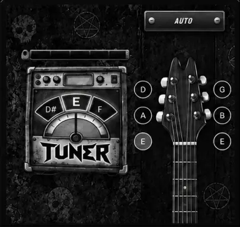
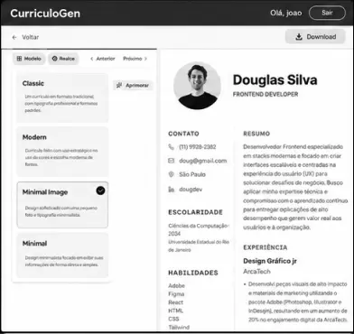
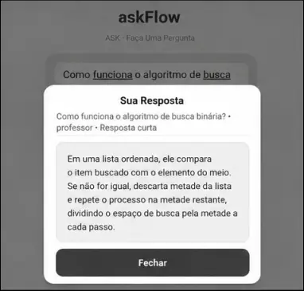
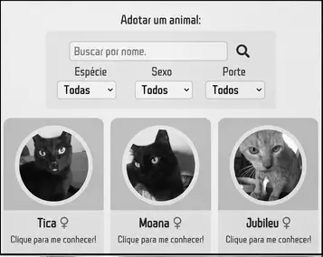
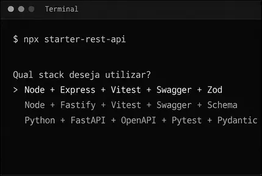

HeroTuner
Afinador de guitarras em tempo real no navegador.
Tecnologias: React · TypeScript ·
Tailwind
Vite · Web Audio API · Pitchy
Full-Stack Developer
Da ideia ao lançamento,
construo soluções prontas para usar.

Afinador de guitarras em tempo real no navegador.
Tecnologias: React · TypeScript ·
Tailwind
Vite · Web Audio API · Pitchy

Crie, personalize e exporte currículos em PDF.
Tecnologias: React · Node.js ·
Express
MongoDB · Tailwind

Respostas de IA adaptadas à sua pergunta.
Tecnologias: React Native · Expo · TypeScript
Ver projeto
Contribuição voluntária em uma plataforma de adoção de animais.
Tecnologias: Next.js · React · TypeScript
Tailwind · Prisma · MongoDB

CLI para gerar APIs REST com Express, Fastify ou FastAPI.
Tecnologias: Node.js · JavaScript · Python · Git · Express · Fastify · FastAPI · Vitest · Pytest · Swagger · OpenAPI · Zod · Schema · Pydantic
Ver projetoInterfaces claras, responsivas e feitas para seu negócio.
Soluções para organizar processos e simplificar sua rotina.
Aplicativos com experiências práticas para o dia a dia.
Páginas para apresentar sua oferta e gerar oportunidades.
Tem um projeto em mente? Vamos tirar a ideia do papel.